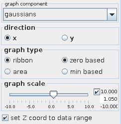
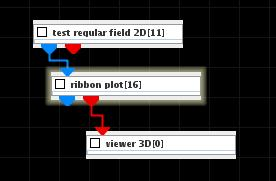
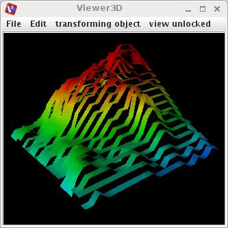

RIBBON PLOT
The ribbon plot module creates three-dimensional ribbons or area slices for scalar regular 2D fields.
Ribbons are height surfaces of a 2D field by treating the values of a component as height. The surfaces are continuous along one axis and discontinuous along the other axis.
Area slices also use values of a component as height. Slices are created in one of the coordinate directions.
Input data
The input field is regular 2D with affine geometry.
Output data
The output field is regular 3D 3-space with affine geometry. A geometry object of the field.
Computation parameters

The graph component drop down list selects the component of the input to map to the height. By default the first component is be used.
The direction radio button allows to choose the direction of ribbons or slices, by default the x-direction is used.
In graph type menu the user defines if the ribbons or area slices are zero based or minimum based. For zero based graphs they are drawn beginning from zero value. For minimum based graphs they are drawn beginning from the minimum value. By default the graph is zero based.
Left mouse dragging at the graph scale slider scales the input height value. If check box on right hand side is on the user is able to change minimum, maximum and current value typing the values into the text fields.
If set Z coord to data range check box is off the z-axis does not describe the values of the functions. By default this option is on.
Presentation parameters
Presentation tab contents are described in the common interfaces section unter the Presentation Panel entry.
Example

Choose test regular field 2D module from test objects library and ribbon plot from 2D field mappers library and connect the modules.
In the test regular field 2D module UI choose resolution 20. In the ribbon plot module UI choose graph component gaussians, direction y and graph scale 1.0.
